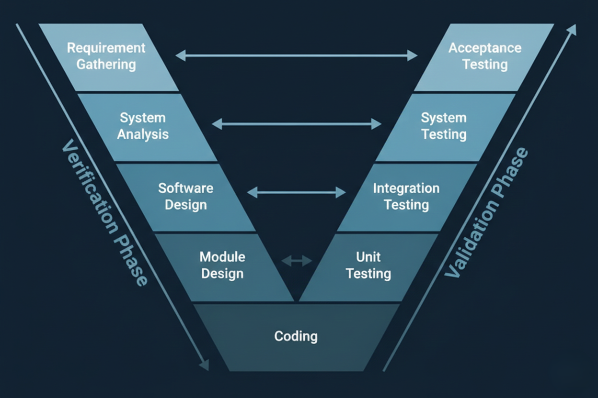

IT Security Specialist
📍 Addis Ababa, Ethiopia
📧 yoseph.alula1@gmail.com
OPEN TO RELOCATION EMEA / North America / Remote
Certified IT Security Specialist with over 5 years of experience. I specialize in risk assessments , ISO/IEC 27001 compliance , and optimizing IT infrastructure in Microsoft-centric environments.
ISO 27001 & GDPR Compliance
Threat Hunting & Incident Response
Azure Security & Entra ID
Hardening & Vulnerability Mgmt
Roseant Engineering PLC | Addis Ababa, Ethiopia | Jan 2021 – Present
Threat & Vulnerability Management: Conducted comprehensive Threat Analysis and Vulnerability assessments, implementing mitigation strategies that improved security posture by 30%.
Requirements & Documentation: Led Document Management initiatives, authoring security User Guides and technical policies to ensure compliance with international standards.
Cross-Functional Collaboration: Partnered with teams across Electronics and software departments to review system architectures and align them with security requirements.
Mentorship: Actively took part in Onboarding and Knowledge Sharing sessions to grow team expertise in Cyber Security protocols.

Security-Focused V-Model Integration
INTAPS PLC | Addis Ababa, Ethiopia | Jul 2017 – May 2018
Embedded Infrastructure: Managed hardware components and Microelectronics environments (UPS/Server systems), ensuring high-integrity operations.
Software Testing & Validation: Used Visual Studio for basic Application Development and testing; performed Software Testing and validation for endpoint protection platforms.
Version Control: Leveraged GitLab for code and configuration management, ensuring structured Document Management and asset tracking.
Sheffield Hallam University | UK | 2018 – 2020
Advanced study in Network Security, Digital Forensics, and Cryptography. Applied theoretical security frameworks to real-world infrastructure scenarios.
MSc in Information Systems Security
Sheffield Hallam University - UK
BSc in Computer Science
Addis Ababa University - Ethiopia
Certification:
I am currently open to international opportunities and specialized security projects.
📩 Contact Me Directly